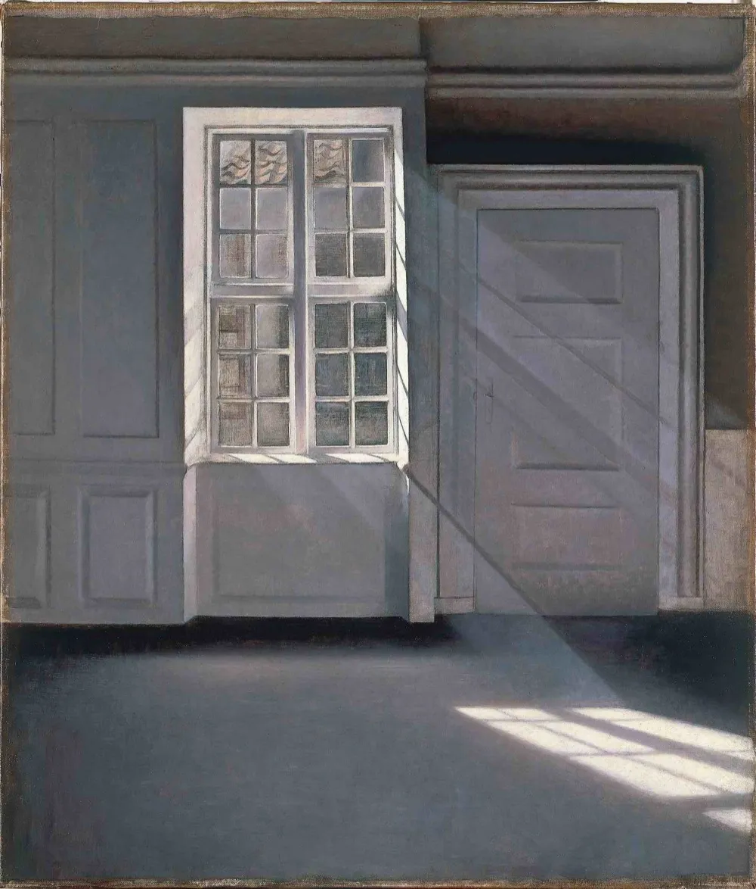
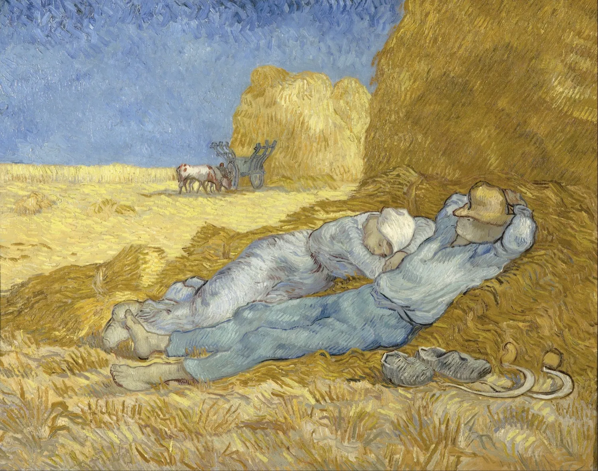
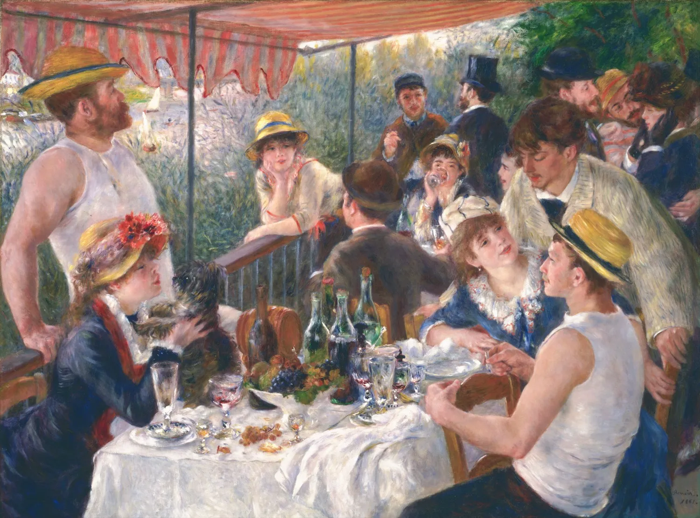

The internet's health hierarchy is upside down
The things with the strongest evidence and the biggest effect on how long you live are the cheapest, oldest, and least exciting: sleep, the people you love, not smoking, and a blood-pressure number you can read in thirty seconds. The things with the loudest marketing, the cold plunge and the shelf of supplements, are mostly at the bottom. This whole guide is that list, put back in order.
If you have read the three fitness guides this one finishes, Big Enough on muscle, Still Moving on cardio, and What You're Supposed to Eat on food, you have the gym and the kitchen covered. Add them up and they are maybe five or six hours of your week. The other hundred and sixty are where the rest of your health is won and lost, and almost nobody ranks them honestly.
So here is the ranking, the one idea this guide is really built around. Read it as rough, not exact: the bars below mix how strong the evidence is with how big the effect tends to be, and reasonable people would shuffle the middle. But the top and the bottom are not close calls.
The parts of health that aren't training or food, ranked by a rough blend of how good the evidence is and how big the effect is. The cheap, quiet ones win. The ones with the influencers lose.
- 1
- 2
- 3
- 4
- 5
- 6
- 7
- 8
- 9
- 10
- 11
- 12
Notice what is loud and what is quiet. The cold plunge and the supplement aisle, the two with the biggest social-media footprint, sit at the bottom. Sleep and the people in your life, the two nobody tries to sell you, sit at the top.
Sleep, the third of your life that runs the other two
You will spend about a third of your life asleep, and it may be the most important third. Sleep is upstream of nearly everything else in this guide: how hungry you are, how steady your mood is, how well your heart and immune system run, how clearly you think. Get it wrong for long enough and no supplement, plunge, or breathing drill will buy it back.

How much: the curve bottoms out at seven
Pool the big studies and the relationship between sleep and dying is a gentle U. Risk is lowest at about seven hours and climbs as you move away in either direction. The largest meta-analysis, 1.3 million people across sixteen cohorts, put short sleep at about a 12 percent higher death rate and long sleep at about 30 percent. Cappuccio 2010 strong A later dose-response meta found the same bottom at seven hours. Yin 2017 strong
One honest catch, because the first commenter will raise it. The long-sleep side of that U is mostly not sleep doing harm. It is harm causing sleep: undiagnosed illness, depression, and inflammation make people sleep more, so "sleeps nine hours" is often a symptom, not a cause. The short-sleep side is the one you can actually act on, and the place most people live.
Relative risk of dying against how long you sleep. Lowest around seven hours, rising on both sides. Remember that the right-hand climb is partly sickness causing long sleep, not the reverse.
More than one in three American adults sleeps under seven hours on a regular basis. Cappuccio 2010; Yin 2017; CDC.
When may matter as much as how long
Here is the newer and more surprising finding: how consistent your schedule is may matter as much as how many hours you log. Using wrist trackers on nearly 61,000 people, the most regular sleepers, same bedtime and wake time night after night, had a 20 to 48 percent lower death rate than the most irregular ones, and regularity predicted survival better than duration did. Windred 2024 good That is one large study, not the last word, but it points at the cheapest sleep upgrade there is: pick a wake-up time and hold it, including weekends.
The disorder you might have and not know
Obstructive sleep apnea, where your airway collapses dozens of times a night and your sleep shatters without fully waking you, may affect close to a billion adults worldwide. Benjafield 2019 good Most of them have no idea. It tracks with high blood pressure, heart disease, and daytime wreckage, and the tells are loud snoring, gasping awake, and being exhausted after a full night. If that is you, ask for a sleep study. (Honest footnote: the big trial of CPAP machines did not cut heart attacks and strokes, partly because people wore the mask only about three hours a night, so treat it as relief for brutal sleep, not a proven heart drug. McEvoy 2016)
What actually works, and what's sold to you
For ongoing insomnia, the first-line treatment in the medical guidelines is not a pill. It is CBT-I, a short structured therapy for sleep, which beats sleeping pills over the long run and is what both the American College of Physicians and the sleep-medicine society recommend you try first. Qaseem 2016 strong Around that, the boring basics are the ones that pay: a consistent wake time, a cool dark room (around 65F), morning daylight to set your clock, and protecting the back half of the night.
That last one is where the nightcap and the late coffee do their damage. Alcohol helps you fall asleep and then fragments the second half of the night and suppresses REM, which is why you wake at 4 a.m. after drinking. Ebrahim 2013 good And caffeine has a long tail: a meta-analysis found it costs about 45 minutes of sleep, and a 2023 review suggests cutting it off roughly 8 to 9 hours before bed, more if you are sensitive. Gardiner 2023 strong
Your caffeine curfew
interactive12:30 pm
As for the sleep economy: most of it is weak. Blue-light-blocking glasses have thin evidence, consumer sleep trackers are mostly unvalidated against real sleep labs, and melatonin is widely misunderstood. It is a low-dose timing signal, not a sedative, and the pills are alarmingly mislabeled: one analysis found actual content running from 83 percent below the label to 478 percent above it, and a 2023 study found 22 of 25 gummy products off, one containing no melatonin at all. Erland 2017 Cohen 2023 strong
The people around you
The best-evidenced thing on this page that isn't sleep is also the one least likely to be filed under health: the people you are close to. Loneliness does more than feel bad. Measured across millions of lives, it carries a risk of early death in the same range as the classic killers, and almost nobody treats fixing it as a health priority.
The landmark here is a 2010 meta-analysis of 148 studies and 300,000 people: those with stronger social ties had about 50 percent better odds of surviving a study's follow-up than those with weaker ones. Holt-Lunstad 2010 strong A second analysis, 3.4 million people, isolated the lonely end: social isolation raised mortality risk about 29 percent, loneliness about 26, and living alone about 32, even after adjusting for other risks. Holt-Lunstad 2015 strong
Increase in the risk of dying tied to each measure, after adjusting for other factors. These sit alongside well-known risks like obesity, which is the company they keep.
The 2023 US Surgeon General's advisory put the effect of disconnection in the range of smoking up to 15 cigarettes a day. That line gets overquoted, it comes from the broad social-connection figure, not loneliness alone, so read it as an analogy, not a measurement. Holt-Lunstad 2010, 2015.

The steelman, because this is observational: maybe sick and dying people just withdraw, so thin networks are a symptom, not a cause. That is real, and it is partly true. But these are mostly prospective studies that start with healthy people and watch the lonely ones fall behind, the effect survives adjustment for baseline health, and the size is too large and too consistent to be only reverse causation. The honest read is that connection is causal and confounded at once, and you lose nothing by acting as if it matters.
The longest-running evidence agrees. The Harvard Study of Adult Development has followed the same men, and later their families, for over 80 years, and its blunt summary is that the quality of your relationships is the strongest predictor of how healthy and happy you are in old age, better than cholesterol. How satisfied people were with their relationships at 50 predicted their physical health at 80. Waldinger, the Harvard Study good
One more thing belongs here, because it tracks closely: a sense of purpose, a reason to get up. Older adults with the weakest sense of purpose were about two and a half times as likely to die over the next four years as those with the strongest, Alimujiang 2019 and people high in purpose were roughly half as likely to develop Alzheimer's. Boyle 2010 good The mechanism is murky and reverse causation lurks again, but the direction is steady across studies.
The air, the drink, the smoke
Some of the biggest wins in health are not things you add. They are things you stop, or never start. Three of them, smoke, alcohol, and bad air, are doing more quiet damage than any supplement could ever undo, and two of the three are invisible.
Alcohol: the protective glass of wine was a measurement error
For decades the data seemed to show that moderate drinkers outlived teetotalers, the famous J-shaped curve. The curve was largely an artifact. The "non-drinker" group was quietly stuffed with people who had quit because they were already sick, the so-called sick-quitter bias, which made drinkers look healthy by comparison. Stockwell 2016 strong Correct for it, as a 2023 analysis of 4.8 million people did, and the protection vanishes: light drinkers have no lower death rate than lifelong abstainers. Zhao 2023 strong
The old story (dotted) showed a dip below the no-drinking line, the protective glass of wine. Once you stop counting sick ex-drinkers as abstainers, the dip flattens and the line just climbs.
Genetic studies back this up: where genes raise alcohol intake, blood pressure and stroke rise right along with it, with no protective floor. Stockwell 2016; Zhao 2023; Millwood 2019.
It gets firmer. Mendelian randomization, which uses gene variants as a natural experiment to dodge the confounders, shows alcohol raising blood pressure and stroke roughly in a straight line from zero. Millwood 2019 strong And alcohol is a Group 1 carcinogen, the top tier, alongside tobacco; even a drink a day measurably raises breast-cancer risk. IARC, via NCI strong The global analysis that weighed every harm against every supposed benefit landed on a blunt number for the amount that minimizes total damage: zero. GBD Alcohol 2018 None of this means one drink will hurt you in a way you can feel. It means the health column has nothing in it, so drink for pleasure if you drink, not for your heart.
Smoking: still the single worst thing, and the one with the cleanest exit
Nothing else on this page is close. Smoking is the leading cause of preventable death, around 480,000 Americans a year. CDC The 50-year British Doctors Study put the cost at about a decade of life. Doll 2004 strong The hopeful part is how much of that decade you can take back: quit by about 40 and you avoid roughly 90 percent of the excess risk, quit earlier and you reclaim nearly all of it. Jha 2013 strong On vaping: for a smoker trying to switch, e-cigarettes are substantially less harmful than cigarettes and beat patches and gum for quitting. Cochrane 2024 good Not harmless, and not a thing a non-smoker should ever start, but a real ladder down for someone already on cigarettes.
The air you don't think about
The exposure almost nobody manages is the one they are doing every minute. Fine-particulate air pollution, the PM2.5 that comes off traffic, wildfires, and combustion, raises death rates measurably, and in a study of 60 million Americans the harm showed up even below the legal limit. Di 2017 strong It runs the other way too: as US cities cleaned their air, life expectancy rose about 0.6 years for every 10 micrograms of particulate removed. Pope 2009 good Globally, air pollution is now tied to about 8.1 million deaths a year, second only to high blood pressure among risk factors. State of Global Air 2024 strong
Two cheap moves follow. First, radon: an odorless radioactive gas that seeps from soil into homes, it is the second leading cause of lung cancer and the first among people who never smoked, around 21,000 US deaths a year, and a test kit costs about $15. EPA strong Second, indoor air: a HEPA purifier reliably cuts indoor particulates and nudges blood pressure down in controlled trials, useful if you live near traffic or through wildfire season. Walzer 2020 good
The boring numbers that save lives
The most cost-effective intervention in all of medicine is something you can measure in thirty seconds, treat with a generic pill, and most people ignore until it has already done its damage: your blood pressure. This chapter is the unsexy maintenance, the checks and numbers that quietly prevent the things that kill people.
Blood pressure: the silent number one
High blood pressure is the single largest risk factor for death on Earth, tied to about one in five deaths worldwide. GBD 2019 strong It has no symptoms, which is why nearly half of US adults have it and only about one in five has it controlled to target. CDC NHANES And treating it works: the SPRINT trial found that pushing high-risk patients to a tight target cut serious cardiovascular events by 25 percent and all-cause death by 27. SPRINT 2015 strong (Two caveats: SPRINT measured pressure with a careful automated cuff that reads lower than a rushed clinic check, and the aggressive target caused more side effects. The lesson is "know it and treat it," not "chase 120 at any cost.") A $30 home cuff is one of the best health buys there is.
Among US adults, of those who have high blood pressure, how many know it, and how many have it controlled to target. Most of the benefit is lost not because we lack the drugs, but because the number goes unwatched.
The drug is cheap and the measurement is free. The thing that fails is attention. CDC NHANES.
The handful of numbers worth knowing
Beyond blood pressure, two more numbers earn their place. ApoB, or its rough stand-in LDL cholesterol, does not merely track with heart disease, it causes it, in a dose-and-time way: every long-term drop is paid back in less disease, which is why "lower and earlier" wins. Ference 2017 strong And A1c or fasting glucose, because prediabetes is common and quiet: about 38 percent of US adults have it and more than 80 percent do not know. CDC Three numbers, one blood draw and one cuff, and you have caught the things that do the most damage before they announce themselves.
The screens and shots that actually pay
Not every screening test earns its hype, but a few clearly save lives. For heavy smokers, a yearly low-dose CT scan cut lung-cancer deaths by about 20 percent in one large trial and 24 percent in another. NLST 2011 NELSON 2020 strong Colorectal screening from age 45 is strongly recommended, though honesty compels a footnote: the one big randomized trial of colonoscopy found a clear drop in cancer cases but a death reduction that missed significance, dragged down because fewer than half the invited people actually went. USPSTF NordICC 2022 good Mammography is real but more modest than the posters suggest, a roughly 20 percent cut in breast-cancer death paired with meaningful overdiagnosis of cancers that would never have harmed you. Marmot 2012 good
Two vaccines belong here for less obvious reasons. The flu shot is associated with fewer heart attacks in people at cardiac risk, behaving a little like a cardiovascular drug. Udell 2013 good And in a striking natural experiment using an age cutoff in Wales, people who got the shingles vaccine were about 20 percent less likely to be diagnosed with dementia over the next seven years. Eyting 2025 good That second one is observational, even if unusually well-designed, so hold it as a strong hint rather than settled fact.
Teeth and ears, the two everyone forgets
Gum disease travels with heart disease and diabetes, and it is worth treating, but be honest about what is proven: the link is an association tangled with shared risks like smoking, and the trial of a drug built on the gum-bacteria-cause-Alzheimer's theory failed. Cochrane 2019 mixed Keep your teeth because losing them is miserable, not because floss is proven to save your heart. Hearing is the sleeper: untreated hearing loss is the largest potentially modifiable risk factor for dementia in midlife, and a 2023 trial found hearing aids slowed cognitive decline in older adults already at high risk. Lancet Commission 2024 ACHIEVE 2023 good Protect your ears from loud noise now, and treat hearing loss when it comes.
Light and the sun
Step outside in the morning and you do more for your sleep than any pill in the last chapter. Your body clock is set by light, and the gap between indoors and outdoors is enormous: a lit room is a few hundred lux, an overcast morning is 10,000, full sun is 100,000. Your brain reads that difference, and most of us spend the day in the dim end.
Morning light, gotten early and outside, anchors your circadian clock, which downstream means falling asleep more easily and a steadier mood. Brown 2022 good It is the single cheapest sleep and mood intervention there is, and it costs ten minutes and a coat. This is the part of the sun story with almost no downside.
Light intensity in lux, on a scale where each step is ten times brighter. The light your body clock wants is outside, and indoor lighting barely registers next to it.
You cannot get this dose from a window or a lamp. The instruction is almost comically simple: go outside, early, most days. Brown 2022.
Vitamin D: the pill is not the sunshine
Here the popular story oversells. Vitamin D supplements, tested in the 26,000-person VITAL trial, did not lower the risk of heart attack, stroke, or getting cancer, and a separate trial found no drop in fractures. Manson 2019 LeBoff 2022 strong The honest exceptions are modest: a roughly 22 percent drop in new autoimmune disease, and a secondary hint of fewer cancer deaths. Hahn 2022 good If you are genuinely deficient, supplement. But a daily D pill is not the life-extender it is sold as, and it is not a substitute for actual sunlight.
The sun's two faces
Sunlight itself is genuinely double-edged, and the grown-up move is to hold both halves at once. On one side, a long Swedish study found that women who avoided the sun died sooner, with the authors comparing the size of the risk to smoking. Lindqvist 2016 mixed That finding is provocative and badly confounded, sun exposure tracks with wealth, exercise, and vacations, so do not take "as deadly as smoking" literally. There is even a plausible mechanism, sunlight on skin releases nitric oxide that lowers blood pressure, but it rests on small studies. Weller 2014
On the other side, the harm is not contested at all: UV is the main cause of skin cancer and skin aging, and in the one long randomized trial, daily sunscreen cut invasive melanoma to a quarter of the rate. Green 2011 good So the sensible position is not "more sun" or "no sun." It is get your morning light, enjoy moderate sun without burning, and never bake. Burns are the part that clearly hurts you.
Heat: the sauna
Of all the trendy recovery rituals, the sauna has the best numbers, and they come with the biggest asterisk. The numbers are genuinely striking. The asterisk is that nearly all of them come from one group of Finnish men, watched rather than tested.
In a cohort of about 2,300 middle-aged Finnish men followed for two decades, those who used a sauna four to seven times a week, against once a week, had about 63 percent fewer sudden cardiac deaths and 40 percent lower all-cause mortality. Laukkanen 2015 mixed The same cohort showed lower rates of dementia, stroke, and high blood pressure. Laukkanen 2017 mixed Those are big effects, in exercise-drug territory.
All-cause death rate by how often these Finnish men used a sauna, relative to once a week. The trend is real and large. Whether the sauna caused it is the open question.
The healthy-user problem: a man who saunas five times a week is probably retired-comfortable, relaxed, and well enough to sit in heat. Some of this gap is the sauna, and some is the kind of life that includes a lot of sauna. Laukkanen 2015.
So why believe any of it? Because the mechanism is real. A sauna session pushes your heart rate up to levels you would see in moderate exercise and improves how your blood vessels respond, which is plausibly why it tracks with heart health. Laukkanen 2018 And when researchers finally ran an actual randomized trial, using hot-water immersion rather than a sauna, eight weeks of heat improved blood-vessel function and lowered blood pressure against a control. Brunt 2016 good That is the strongest evidence here precisely because it is an experiment, though it measured vessels and pressure, not lifespan.
The honest verdict: promising and biologically plausible, but the lifespan numbers are one observational cohort with a real healthy-user confound, and no trial has shown a sauna makes you live longer. If you enjoy it, use it freely. It is pleasant, it is probably good for your heart, and unlike most of what is left, it has actual numbers behind it. Just hold it as a likely-good bet, not a proven one.
Breath and the nervous system
Chronic stress is genuinely bad for your heart. The gap between that fact and the breathwork-and-mindfulness industry built on top of it is where you should keep your skepticism. The disease is real. Most of the cures are oversold, and a couple are honestly useful.
The damage first. Workers with high job strain, demanding jobs they cannot control, had about a 20 percent higher risk of heart disease across a 200,000-person analysis. Kivimaki 2012 strong Real, but note the size: about 20 percent, not "stress gives you heart attacks." It is a smaller lever than smoking or inactivity, which is the honest framing the headlines skip.
Then the famous one, the stress-mindset study: people under heavy stress who also believed that stress was harming their health had a higher death rate, while equally stressed people who did not hold that belief did not. Keller 2012 mixed It is a TED-talk favorite and worth deflating slightly: it is one observational study with single-question measures, so it shows a correlation, not proof that changing your mind changes your lifespan. Suggestive, not a prescription.
What actually helps? Slow breathing, around six breaths a minute, reliably raises heart-rate variability and can calm you in the moment, though its effect on blood pressure is modest and the trials disagree. Goncalves 2022 mixed Mindfulness meditation produces small but real improvements in anxiety and depression, on the order of what a medication might add, but in the rigorous review it did not beat active alternatives and did nothing measurable for mood, attention, or sleep. Goyal 2014 strong Real tool, oversold as a panacea.
And the Wim Hof method, the breathing-plus-cold routine: in a small trial, trained people really could summon an adrenaline surge and blunt their inflammatory response to an injected toxin. Kox 2014 mixed That is a genuine, short-lived physiological effect in 24 healthy young men. It is not evidence of better long-term immunity or a longer life, and the breath-holds are dangerous in or near water. Impressive party trick, thin health claim.
So the useful core is small and unglamorous. If you want to lower your stress load, the things with the best evidence are not breathing apps. They are the levers already in this guide: sleep, the people in your life, time outside, and exercise. Slow breathing is a fine in-the-moment tool. Just do not expect an app to undo a life you need to change.
Cold: the plunge
The cold plunge is the most-marketed item in this entire guide and one of the least-supported. It feels incredible, it genuinely lifts your mood for an hour, and almost everything else claimed for it, the fat loss, the immune boost, the dopamine that supposedly carries your whole day, rests on a few tiny studies stretched far past what they showed. And done at the wrong time, it quietly eats the muscle you went to the gym to build.
Start with the best-established finding, because it is the one the plunge crowd never mentions. If you ice down right after lifting, you blunt the gains. In a controlled 12-week trial, men who took a cold-water bath after strength training built clearly less muscle and strength than men who did an easy cool-down instead. Roberts 2015 good The cold dampens the very inflammation that signals your muscles to grow. If you read Big Enough, this is the direct sequel: do not plunge in the hours after a workout you lifted to grow from.
How much real support each popular claim actually has. Longer bars mean better evidence. The famous benefits are at the thin end; the honest ones are narrower than the marketing.
The soreness benefit is real, and it is the same mechanism that blunts your gains: cold buys short-term recovery by suppressing the adaptation signal. Hohenauer 2015; Sramek 2000; Buijze 2016; Roberts 2015.
Walk through the famous claims. The "cold boosts dopamine 250 percent for hours" line traces to a single study of ten people sitting in 57F water for an hour, measuring blood chemistry, not a two-minute tub plunge, and not brain mood. Sramek 2000 mixed The immune claim comes from a cold-shower trial where people reported 29 percent fewer sick days but were not actually ill any less, they just pushed through. Buijze 2016 good Brown fat does activate in the cold, but it burns too few calories to matter for your weight. van Marken Lichtenbelt 2009
Where cold genuinely earns its place is short-term recovery: a meta-analysis confirms it reliably reduces muscle soreness. Hohenauer 2015 strong Which is exactly the catch, it is the same dampening that costs you the muscle gain. Useful between two efforts on the same day, like a tournament. Counterproductive the evening after leg day. (A small safety note: the cold-shock response can trigger dangerous heart rhythms in vulnerable people, so it is not for everyone with a heart condition. Tipton 2012)
The hype pile
Everything left is the loud aisle: the products with the biggest claims and the thinnest files. Here is a fast, fair verdict on each, with the real-but-narrow use case noted where one exists. The honest split is between things proven not to work, and things simply never shown to, which deserve "no good evidence yet," not a sneer.
| The thing | The pitch | The honest verdict | |
|---|---|---|---|
| Red light panels | Cellular energy, fat loss, anti-aging | Real for skin, hair, and wound healing. The whole-body "energy and longevity" claims are unproven. | mixed |
| Grounding / earthing | Reconnect to the Earth's charge | No credible evidence, and the mechanism is implausible. Walk barefoot because it's nice, not medicine. | thin |
| NAD+ boosters (NMN, NR) | Reverse aging at the cellular level | They do raise NAD+ in your blood, but no human trial shows longer life or better health outcomes. The hype is mostly mouse studies. | mixed |
| Glucose monitors for the healthy | See your "spikes," eat optimally | No evidence it helps people without diabetes, and it can breed anxiety over normal post-meal rises. Great for diabetics, pointless for you. | mixed |
| Mouth taping | Forced nasal breathing for better sleep | Very weak evidence and a real risk if you have undiagnosed sleep apnea. Not for the general public. | thin |
| Posture "correction" | Fix your text neck or pay in pain | The posture-to-pain link is weak. Varying your position and moving beats chasing one "correct" posture. | good |
| Detoxes and cleanses | Flush out the toxins | No evidence. Your liver and kidneys already do this, continuously, for free. | strong |
| Alkaline water | De-acidify your body | You cannot change your blood's pH by drinking, and you wouldn't want to. It's just water. | strong |
| Multivitamins for longevity | Insurance in a pill | In 390,000 adults, no lower death rate. Worth it only to correct a real deficiency. | strong |
| Fish oil for prevention | Protect your heart | The big trials missed their main heart target in the general population. A prescription form helps a specific high-triglyceride group. | good |
| High-dose antioxidant pills | Fight aging and cancer | The biohack that backfired: high-dose beta-carotene raised lung cancer in smokers. Get antioxidants from food. | strong |
| "Adrenal fatigue" cures | Fix your burned-out adrenals | Not a real diagnosis. A review of 58 studies found no such condition; the label can hide a treatable illness. | strong |
The pattern is the lesson. The items graded "strong" are mostly strong evidence that something does not work, the cleanses, the alkaline water, the longevity multivitamin. The ones graded "mixed" are usually not disproven, just unproven: NAD+ boosters and red light panels might do something someday, but the marketing has sprinted miles ahead of the data. When a product can raise a number in your blood, that number gets sold to you long before anyone shows it changes your life.
Putting it together
Here is the whole guide as one ordered list, biggest lever first. You do not need all of it at once. You need to know which rung you are standing on, and reach for the next one up.
- Sleep like it's the foundation, because it is.Pick a wake time and hold it, get morning light, protect the back half of the night from alcohol and late caffeine, and get checked if you snore and wake up wrecked.
- Tend your close relationships on purpose.Keep the standing dinner, make the call, do not let the people who know you drift. Treat it as health, not as the thing you get to after the real work.
- Don't smoke, and if you do, quitting is the highest-value move you have.Quitting by 40 buys back most of the lost decade. There is no close second.
- Know your blood pressure, and treat it.A $30 cuff and a generic pill prevent more death than almost anything in medicine. Add a blood panel: ApoB or LDL, and A1c.
- Drink little or none, and get the screens and shots that work.There's no health case for alcohol. Get the cancer screenings for your age, the flu shot, and shingles when you're eligible.
- Get outside in the morning, breathe clean air, protect your hearing.Daily daylight, a radon test, a HEPA filter near traffic or smoke, and earplugs at loud shows. Cheap, quiet, real.
- Then, if you enjoy them, the nice-to-haves.Sauna (likely good), a sane stress practice, a cold plunge for the feeling (just not after lifting). Pleasures with a possible bonus, not the main event.
- Skip the supplement aisle and the biohacks.Correct a real deficiency, otherwise save the money. Almost none of it changes an outcome you care about.
To find your own next rung, do not start at the top by reflex. Start where you are weakest. The tool below asks you to be honest across the big levers and tells you where your next hour is best spent. It is leverage-weighted, so a smoking habit or a wrecked sleep schedule will outrank a missed cold plunge by a mile, which is the entire point.
Where your next hour goes
interactiveCheck your sleep
And then the discipline this whole site keeps circling back to: knowing what actually matters and ignoring the noise. The noise in health is loud, well-funded, and pointed at the bottom of that list, the plunge, the powder, the panel. The signal is quiet and almost free, and it has been sitting at the top the whole time. Sleep. The people you love. Clean air, a known blood pressure, a morning walk in real light. Get those, and you have most of the prize, for almost none of the cost, with hours left over to go live the life you kept the body for.
The things that work are quiet and old. The things that are loud and new can wait for the evidence.The Other Hours
Sources, and how to read them
Every number in this guide is tied to a real study, cited where it appears. The research was told to refute the claims, not flatter them, so the corrections (the long-sleep U is partly reverse causation, the sauna data is one confounded cohort, the cold-plunge dopamine stat is ten people, vitamin D pills mostly failed their trials) were left visible above.
The full list, 64 sources, grouped by chapter
- Sleep
- Cappuccio FP, et al. (2010). Sleep duration and all-cause mortality: a meta-analysis. Sleep. PMC
- Yin J, et al. (2017). Sleep duration and all-cause mortality: dose-response meta-analysis. J Am Heart Assoc. ahajournals.org
- Windred DP, et al. (2024). Sleep regularity is a stronger predictor of mortality than sleep duration. Sleep. academic.oup.com
- Benjafield AV, et al. (2019). Global prevalence of obstructive sleep apnea. Lancet Respir Med. thelancet.com
- McEvoy RD, et al. (2016). CPAP for prevention of cardiovascular events in OSA (SAVE). NEJM. PubMed
- Qaseem A, et al. (2016). Management of chronic insomnia disorder: ACP guideline (CBT-I first-line). Ann Intern Med. acpjournals.org
- Ebrahim IO, et al. (2013). Alcohol and sleep: effects on normal sleep. Alcohol Clin Exp Res. PubMed
- Gardiner C, et al. (2023). The effect of caffeine on subsequent sleep: meta-analysis. Sleep Med Rev. PubMed
- Erland LAE, Saxena PK (2017). Melatonin supplements: wide variability in content. J Clin Sleep Med. PubMed
- Cohen PA, et al. (2023). Quantity of melatonin in marketed gummies. JAMA. PubMed
- The people around you
- Holt-Lunstad J, Smith TB, Layton JB (2010). Social relationships and mortality risk: meta-analysis. PLoS Medicine. PMC
- Holt-Lunstad J, et al. (2015). Loneliness and social isolation as mortality risk factors: meta-analysis. Perspect Psychol Sci. sagepub.com
- Waldinger RJ, Schulz MS. The Harvard Study of Adult Development (relationships and late-life health). Harvard Gazette summary. harvard.edu
- Alimujiang A, et al. (2019). Purpose in life and mortality among older adults. JAMA Netw Open. PMC
- Boyle PA, et al. (2010). Purpose in life and risk of Alzheimer's disease and MCI. Arch Gen Psychiatry. PMC
- The air, the drink, the smoke
- GBD 2016 Alcohol Collaborators (2018). Alcohol use and burden: the level minimizing harm is zero. The Lancet. PubMed
- Stockwell T, et al. (2016). Do "moderate" drinkers have reduced mortality? Abstainer-bias meta-analysis. J Stud Alcohol Drugs. PMC
- Zhao J, et al. (2023). Alcohol and all-cause mortality, bias-corrected meta-analysis. JAMA Netw Open. PMC
- Millwood IY, et al. (2019). Alcohol and cardiovascular disease: Mendelian randomization (China Kadoorie). The Lancet. PubMed
- IARC / NCI. Alcohol and cancer risk (Group 1 carcinogen). NCI fact sheet. cancer.gov
- CDC. Cigarette smoking and the leading cause of preventable death. cdc.gov
- Doll R, et al. (2004). Mortality in relation to smoking: 50 years' observations on British doctors. BMJ. PMC
- Jha P, et al. (2013). 21st-century hazards of smoking and benefits of cessation. NEJM. nejm.org
- Lindson N, et al. (2024). Electronic cigarettes for smoking cessation. Cochrane. cochranelibrary.com
- Di Q, et al. (2017). Air pollution and mortality in the Medicare population (effects below the standard). NEJM. PubMed
- Pope CA, Ezzati M, Dockery DW (2009). Fine-particulate air pollution and life expectancy. NEJM. PubMed
- Health Effects Institute (2024). State of Global Air 2024 (air pollution, 2nd leading risk factor). healtheffects.org
- US EPA. Health risk of radon. epa.gov
- Walzer D, et al. (2020). HEPA air purification and cardiovascular markers: RCT meta-analysis. PMC
- The boring numbers
- GBD 2019 Risk Factors Collaborators (2020). High systolic blood pressure as the leading risk factor for death. The Lancet. thelancet.com
- SPRINT Research Group (2015). Intensive vs standard blood-pressure control. NEJM. PubMed
- CDC NHANES. Hypertension prevalence, awareness, and control. cdc.gov
- Ference BA, et al. (2017). LDL causes atherosclerotic cardiovascular disease (EAS consensus). Eur Heart J. PMC
- National Lung Screening Trial (2011). Reduced lung-cancer mortality with low-dose CT. NEJM. PMC
- de Koning HJ, et al. (2020). Lung-cancer screening (NELSON trial). NEJM. PubMed
- Bretthauer M, et al. (2022). Colonoscopy screening and colorectal-cancer risk (NordICC). NEJM. PMC
- Marmot MG, et al. (2012). The benefits and harms of breast cancer screening. The Lancet. PMC
- Udell JA, et al. (2013). Influenza vaccination and cardiovascular events: meta-analysis. JAMA. PubMed
- Eyting M, Geldsetzer P, et al. (2025). Shingles vaccination and dementia: a natural experiment. Nature. nature.com
- Worthington HV, et al. (2019). Interdental cleaning (flossing) for gum disease. Cochrane. cochranelibrary.com
- Livingston G, et al. (2024). Dementia prevention, intervention, and care: Lancet Commission (hearing loss). The Lancet. thelancet.com
- Lin FR, et al. (2023). Hearing intervention and cognitive decline (ACHIEVE). The Lancet. PubMed
- Light and the sun
- Brown TM, et al. (2022). Recommendations for daytime, evening, and night-time light exposure. PLOS Biology. PMC
- Manson JE, et al. (2019). Vitamin D supplements and prevention of cancer and cardiovascular disease (VITAL). NEJM. nejm.org
- LeBoff MS, et al. (2022). Vitamin D supplementation and fractures (VITAL). NEJM. PubMed
- Hahn J, et al. (2022). Vitamin D and marine omega-3 for autoimmune disease prevention (VITAL). BMJ. bmj.com
- Lindqvist PG, et al. (2016). Avoidance of sun exposure and mortality (MISS cohort). J Intern Med. PubMed
- Liu D, Weller RB, et al. (2014). UVA, nitric oxide, and blood pressure. J Invest Dermatol. PubMed
- Green AC, et al. (2011). Daily sunscreen use and melanoma (Nambour trial). J Clin Oncol. PubMed
- Heat, breath, and cold
- Laukkanen T, et al. (2015). Sauna bathing and cardiovascular and all-cause mortality. JAMA Intern Med. PubMed
- Laukkanen T, et al. (2017). Sauna bathing and risk of dementia. Age and Ageing. academic.oup.com
- Laukkanen J, Laukkanen T, Kunutsor SK (2018). Cardiovascular and other health benefits of sauna bathing: a review. Mayo Clin Proc. mayoclinicproceedings.org
- Brunt VE, et al. (2016). Passive heat therapy improves endothelial function and blood pressure. J Physiol. PubMed
- Kivimaki M, et al. (2012). Job strain and coronary heart disease: meta-analysis. The Lancet. PMC
- Keller A, et al. (2012). Does the perception that stress affects health matter? Health Psychology. PMC
- Goncalves de Freitas L, et al. (2022). Slow breathing and blood pressure: meta-analysis. Health Sci Rep. wiley.com
- Goyal M, et al. (2014). Meditation programs for psychological stress: meta-analysis. JAMA Intern Med. jamanetwork.com
- Kox M, et al. (2014). Voluntary activation of the sympathetic nervous system and immune response (Wim Hof). PNAS. PMC
- Roberts LA, et al. (2015). Cold-water immersion attenuates strength-training adaptations. J Physiol. PubMed
- Sramek P, et al. (2000). Human physiological responses to immersion in water of different temperatures. Eur J Appl Physiol. Springer
- Buijze GA, et al. (2016). Cold showers and sickness absence: a randomized trial. PLOS ONE. plos.org
- van Marken Lichtenbelt WD, et al. (2009). Cold-activated brown adipose tissue in adults. NEJM. nejm.org
- Hohenauer E, et al. (2015). Cold-water immersion for recovery: meta-analysis. PLOS ONE. plos.org
- Shattock MJ, Tipton MJ (2012). "Autonomic conflict": arrhythmias during cold-water immersion. J Physiol. PubMed